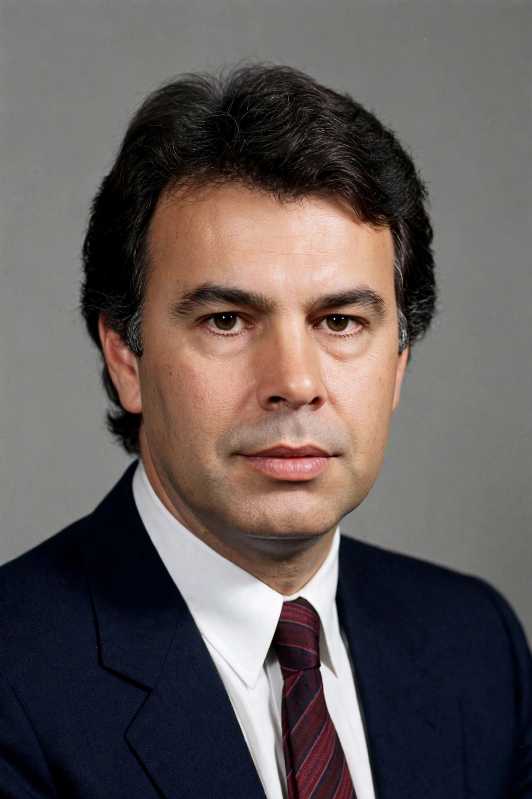

| Felipe González | |
|---|---|
 | |
| Born | 5 March 1942, Seville, Spain |
| Nationality | Spanish |
| Office | Prime Minister of Spain (1982–1996) |
| Political party | Spanish Socialist Workers' Party (PSOE) |
Felipe González Márquez (born 5 March 1942) is a Spanish lawyer and politician who served as Prime Minister of Spain from 1982 to 1996, the longest-serving prime minister of the democratic era. As leader of the Spanish Socialist Workers' Party (PSOE), he won four consecutive general elections and presided over Spain's accession to the European Community, extensive modernisation and the consolidation of democracy after the failed 23-F coup.
González was born in Seville and studied law there, joining the then-clandestine Socialist Party in 1964 under the alias "Isidoro". At the party's Suresnes congress in exile in 1974 he became secretary general, and he steered the PSOE away from Marxist self-definition in 1979, resigning briefly and returning when the party accepted a social-democratic programme.
The PSOE won a landslide in October 1982 with the slogan "Por el cambio" ("For change"). González's governments expanded education, health care and pensions, built modern infrastructure, and in 1986 took Spain into the European Community; a referendum the same year confirmed NATO membership on his government's terms. Spain's profile rose with the Barcelona Olympics and Seville Expo in 1992. His later years in office were marked by economic recession and scandals, including the GAL affair involving state-linked death squads against ETA, and corruption cases. The PSOE narrowly lost the 1996 election to José María Aznar's People's Party, and González resigned as party leader in 1997.
After politics González has worked in business and as an elder statesman, advising Latin American governments and serving as the EU's ambassador for the Belgrade–Pristina dialogue. He acquired Colombian citizenship in 2014 and has remained a commentator on Spanish and European affairs.